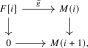

Let \(R\) be a connective ring spectrum. The goal of this section is to establish the Postnikov t-structure on the stable \(\infty \)-category \(\LMod _R\) of left \(R\)-modules. This t-structure will be inherited from the Postnikov t-structure on \(\Sp \) (Proposition 6.3.4), using the following property of the monoidal structure:
Definition 8.2.1 (Connectivity-preserving symmetric monoidal structure). Let \(C\) be a stably symmetric monoidal \(\infty \)-category, meaning that \(C\) is stable and its tensor product is exact separately in both variables, and equip \(C\) with a t-structure. We say that the symmetric monoidal structure on \(C\) is connectivity-preserving if the following two conditions are satisfied:
- (1)
-
The monoidal unit \(\unit \) of \(C\) is connective;
- (2)
-
For two connective objects \(X,Y \in C_{\geq 0}\), the tensor product \(X \otimes Y\) is again connective.
This condition is often expressed by saying that the t-structure is compatible with the symmetric monoidal structure. If the symmetric monoidal structure is connectivity-preserving, then \(C_{\geq 0}\) inherits a symmetric monoidal structure making the inclusion \(C_{\geq 0} \hookrightarrow C\) into a symmetric monoidal functor; this is proved in Part II in Lemma 14.5.2. As a consequence, the truncation functor \(\tau _{\geq 0}\colon C \to C_{\geq 0}\) is canonically lax symmetric monoidal (see Proposition 14.3.6).
Definition 8.2.2. Let \(C\) be a stable \(\infty \)-category equipped with a t-structure and a connectivity-preserving symmetric monoidal structure. Let \(R \in \Alg (C_{\geq 0})\) be a connective associative algebra in \(C\). We say that a left \(R\)-module \(M\) is connective if its underlying object in \(C\) is connective, and similarly for coconnective modules. This defines full subcategories \[ \LMod _R(C)_{\geq 0}, \quad \LMod _R(C)_{\leq 0} \quad \subseteq \quad \LMod _R(C). \]
Lemma 8.2.3. Let \(C\) be a stably symmetric monoidal \(\infty \)-category equipped with a t-structure for which the symmetric monoidal structure is connectivity-preserving, and let \(R\in \Alg (C_{\geq 0})\). Then \(\LMod _R(C)\) admits a t-structure in which a left \(R\)-module is connective or coconnective precisely when its underlying object in \(C\) is so. The truncation functors are computed on underlying objects.
Proof. The adjunction between the symmetric monoidal inclusion \(C_{\geq 0}\hookrightarrow C\) and its lax symmetric monoidal right adjoint \(\tau _{\geq 0}\) induces, after passing to algebras and modules and taking the fiber over \(R\), an adjunction \[ \LMod _R(C_{\geq 0})\rightleftarrows \LMod _R(C). \] Its right adjoint is computed on underlying objects by \(\tau _{\geq 0}\). Finite limits and colimits of modules are computed on underlying objects by Corollary 19.1.17, so it remains to check the orthogonality and decomposition axioms for a t-structure. If \(X\) is connective and \(Y\) is coconnective, adjunction gives \[ \Hom _{\LMod _R(C)}(X,Y[-1]) \simeq \Hom _{\LMod _R(C_{\geq 0})}(X,\tau _{\geq 0}(Y[-1])) \simeq *. \] Finally, for an arbitrary \(R\)-module \(X\), the counit \(\tau _{\geq 0}X\to X\) in modules has connective source, and its cofiber is coconnective because this is true after forgetting to \(C\). This supplies the required decomposition. □
We now wish to apply this to the Postnikov t-structure on \(\Sp \).
Proof. The sphere spectrum is connective. Given two connective spectra \(X\) and \(Y\), we need to show that \(X \otimes Y\) is again connective. If we write \(X_n := \Omega ^{\infty - n}X\) and \(Y_m := \Omega ^{\infty -m} Y\) for all \(n,m \geq 0\), then \(X_n\) is \(n\)-connective and \(Y_m\) is \(m\)-connective. The standard connectivity estimate for smash products, which follows by applying the Blakers–Massey theorem to \(X_n\vee Y_m\to X_n\times Y_m\), shows that \(X_n \wedge Y_m\) is \((n+m)\)-connective. Using the colimit formula from Subsection 4.4.3, we have \[ X \otimes Y \simeq \colim _n \colim _m (\Sigma ^{\infty }(X_n \wedge Y_m))[-(n+m)]. \] The shift-additivity ambiguity mentioned there is irrelevant here, since we use only the connectivity of the terms. Each spectrum in this colimit is connective, and \(\Sp _{\geq 0} \subseteq \Sp \) is closed under colimits, so \(X \otimes Y \in \Sp _{\geq 0}\), as desired. □
Corollary 8.2.5. Let \(R\) be a connective associative ring spectrum. Then \(\LMod _R\) admits a t-structure given by the connective and coconnective \(R\)-modules. This t-structure is both left and right complete, and every left \(R\)-module \(M\) satisfies \[ M \quad \simeq \quad \colim (\tau _{\geq 0}M \to \tau _{\geq -1}M \to \dots ) \qquadtext {and} M \quad \simeq \quad \lim (\dots \to \tau _{\leq 1}M \to \tau _{\leq 0}M). \] The same statements hold for \(\RMod _R\).
Proof. The existence of the t-structure is, in light of the previous lemma, an instance of Lemma 8.2.3. By that same lemma, an \(R\)-module is connective or coconnective precisely when its underlying spectrum is, so an infinitely connective or infinitely coconnective \(R\)-module has vanishing homotopy groups and is zero. Thus the t-structure is left and right separated. The forgetful functor \(\LMod _R \to \Sp \) preserves limits and colimits, and \(\Sp _{\geq 0}\) and \(\Sp _{\leq 0}\) are closed under countable products and countable coproducts, respectively. Lemma 6.3.31 therefore upgrades separatedness to left and right completeness. The two displayed formulas express these completeness properties. □
Proposition 8.2.6. The functor \(\pi _0\colon \Sp _{\geq 0} \to \Ab \) is symmetric monoidal, where \(\Ab \) is equipped with the usual tensor product \(- \otimes ^{\heartsuit } -\).
Proof. Under the symmetric monoidal equivalence \(\Sp _{\geq 0}\simeq \CGrp (\An )\) established in Part II (Corollary 16.6.5), this functor corresponds to the symmetric monoidal functor \(\pi _0\colon \CGrp (\An )\to \CGrp (\Set )=\Ab \) of Proposition 16.4.5. □
Observation 8.2.7. Let \(R\) be a connective associative ring spectrum. The fully faithful symmetric monoidal inclusion \(\Sp _{\geq 0}\hookrightarrow \Sp \) identifies \(\LMod _R(\Sp _{\geq 0})\) with the full subcategory of \(\LMod _R\) spanned by the connective modules. By Proposition 8.2.6, extracting \(\pi _0\) therefore determines a functor \[ \pi _0\colon \LMod _{R,\geq 0} = \LMod _R(\Sp _{\geq 0}) \to \LMod _{\pi _0(R)}(\Ab ). \] Furthermore, this functor is compatible with relative tensor products: given a connective right \(R\)-module \(M\) and a connective left \(R\)-module \(N\), we have an isomorphism of abelian groups \[ \pi _0(M) \otimes ^{\heartsuit }_{\pi _0(R)} \pi _0(N) \iso \pi _0(M \otimes _R N), \qquad [x] \otimes [y] \mapsto [x \otimes y]. \] Both \(\pi _0\colon \Sp _{\geq 0}\to \Ab \) and the symmetric monoidal inclusion \(\Sp _{\geq 0}\hookrightarrow \Sp \) preserve geometric realizations. Applying Proposition 19.2.11, proved in Part II, to these two functors shows, respectively, that \(\pi _0\) preserves relative tensor products and that the relative tensor product of connective modules computed in \(\Sp _{\geq 0}\) agrees with the one computed in \(\Sp \). In particular, the relative tensor product of connective modules is connective, and this gives the asserted isomorphism. The analogous statements hold for right modules.
The following cellular description of connective modules will also identify the heart of the module t-structure.
Proposition 8.2.8 ([Lurie (2017), Proposition 7.1.1.13(1)]). Let \(R\) be a connective associative ring spectrum. Then the \(\infty \)-category \(\LMod _{R,\geq 0}\) is the smallest subcategory of \(\LMod _R\) which contains \(R\) and which is closed under colimits. The analogous statement holds for connective right \(R\)-modules.
Proof. It is clear that \(\LMod _{R,\geq 0}\) contains \(R\) and is closed under colimits. Conversely, given a connective left \(R\)-module \(M\), we will show that \(M\) can be written as a colimit of a diagram of left \(R\)-modules \[ M(0) \to M(1) \to M(2) \to \dots \] satisfying the following properties:
- (i)
-
The \(R\)-module \(M(0)\) is a coproduct of copies of \(R\).
- (ii)
-
For \(i \ge 0\), there is an exact sequence \[ F[i] \to M(i) \to M(i+1), \] where \(F\) is a coproduct of copies of \(R\).
We will construct the modules \(M(i)\) inductively, together with their maps \(f_i\colon M(i) \to M\). In fact, we will inductively ensure that these maps satisfy the following third property:
- (iii)
-
Let \(i \ge 0\), and let \(K(i)\) be the fiber of the map \(M(i) \to M\). Then \(\pi _j K(i) \simeq 0\) for \(j < i\).
For \(i = 0\), we can choose a map of left \(R\)-modules \(M(0) \to M\) where \(M(0)\) is a coproduct of copies of \(R\), such that the induced map \(\pi _0(M(0)) \to \pi _0(M)\) is surjective: for instance, we could take the coproduct indexed by the set \(\pi _0(M)\). For the induction step, we first consider the exact sequence \[ K(i) \to M(i) \to M. \] The group \(\pi _i K(i)\) is a \(\pi _0(R)\)-module, and we may choose a map of left \(R\)-modules \(g\colon F[i] \to K(i)\) from a coproduct of copies of \(R[i]\) such that the induced map \(\pi _i(F[i]) \to \pi _i(K(i))\) is surjective. Let \(\widetilde {g}\colon F[i] \to M(i)\) be the composite of \(g\) with the fiber inclusion \(K(i) \to M(i)\). We define \(M(i+1)\) to be the pushout of the diagram

so that \(M(i+1)\) is the cofiber of \(\widetilde {g}\). Since the composite \(F[i] \to K(i) \to M(i) \to M\) is canonically nullhomotopic, there is an induced map \(f_{i+1}\colon M(i+1) \to M\). The induced fiber sequence \[ F[i] \longrightarrow K(i) \longrightarrow K(i+1) \] shows that \(\pi _jK(i+1)=0\) for \(j<i\), while the surjectivity of \(\pi _i(F[i]) \to \pi _i(K(i))\) gives \(\pi _iK(i+1)=0\). This verifies the inductive step.
It remains to prove that the natural map \(\colim _i M(i) \to M\) is an isomorphism. Since filtered colimits are exact in \(\Sp \), the fiber \(K\) of this map is \(\colim _i K(i)\). By property (iii), the group \(\pi _jK(i)\) vanishes for \(i>j\), and by Lemma 4.4.27 we conclude that \(\pi _j(K)=0\) for every \(j\). Hence \(K=0\).
The same construction with right free modules proves the assertion for connective right \(R\)-modules. □
Lemma 8.2.9. Let \(R\) be a connective associative ring spectrum. Then the functor \(\pi _0\) from Observation 8.2.7 restricts to equivalences \[ \LMod _R^{\heartsuit } \iso \LMod _{\pi _0(R)}(\Ab ), \qquad \RMod _R^{\heartsuit } \iso \RMod _{\pi _0(R)}(\Ab ) \] between the hearts of the module categories and the abelian categories of discrete modules over \(\pi _0(R)\).
Proof. We prove the statement for left modules; the proof for right modules is identical. For essential surjectivity, write a discrete \(\pi _0(R)\)-module \(M\) as a coequalizer of free modules. The two maps between the free modules lift to maps between coproducts of copies of \(R\), since maps out of \(R\) are classified by elements of \(\pi _0\). Form their coequalizer \(\widetilde M\) in \(\LMod _{R,\geq 0}\) and then apply \(\tau _{\leq 0}\). Since \(\pi _0\) preserves colimits of connective modules, we have \(\pi _0(\widetilde M)\cong M\), and hence \(\tau _{\leq 0}\widetilde M\) is a discrete \(R\)-module whose image under \(\pi _0\) is \(M\).
We will now show that the functor is fully faithful. Let \(N \in \LMod _R^{\heartsuit }\), and consider the subcategory \(C \subseteq \LMod _{R,\geq 0}\) spanned by those left \(R\)-modules \(M\) such that the map \[ \pi _0 \Hom _{\LMod _R}(M,N) \to \Hom _{\LMod _{\pi _0(R)}(\Ab )}(\pi _0(M),\pi _0(N)) \] is an isomorphism. The subcategory \(C\) contains \(R\). It is also closed under colimits: for connective \(M\) and discrete \(N\), the mapping spectrum \(\hom _R(M,N)\) is coconnective, and \(\pi _0\colon \Sp _{\leq 0}\to \Ab \) preserves limits. Thus both sides of the displayed map carry colimits in \(M\) to limits. It follows from Proposition 8.2.8 that \(C = \LMod _{R,\geq 0}\), as desired. □
Notation 8.2.10. Let \(R\) be a discrete associative ring. We will from now on denote the categories \(\LMod _R(\Ab )\) and \(\RMod _R(\Ab )\) of discrete left and right \(R\)-modules by \(\LMod _R^{\heartsuit }\) and \(\RMod _R^{\heartsuit }\), respectively. This notation is justified by Lemma 8.2.9: these categories agree with the hearts of the t-structures on \(\LMod _R = \LMod _R(\Sp )\) and \(\RMod _R = \RMod _R(\Sp )\).
Tensor products in \(\Ab \) will from now on always be denoted by \(\otimes ^{\heartsuit }\); we reserve \(\otimes \) for the tensor product in \(\Sp \).
Remark 8.2.11. The \(\infty \)-category \(\LMod _R\) also admits a t-structure when \(R\) is not connective. In this case, the subcategory \(\LMod _{R,\geq 0}\) may still be described as the smallest subcategory of \(\LMod _R\) that contains \(R\) and is closed under colimits. The subcategory \(\LMod _{R,\leq 0}\) is still given by those \(R\)-modules whose underlying spectrum is coconnective. We refer to [Lurie (2017), Proposition 1.4.4.11] for a very general result for producing t-structures on presentable \(\infty \)-categories.
Generated from the authoritative LaTeX source.